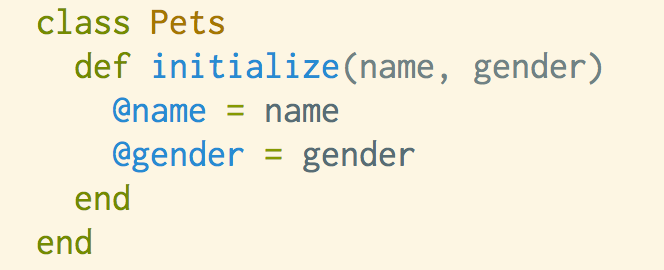
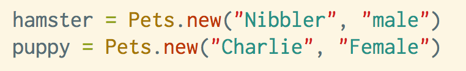
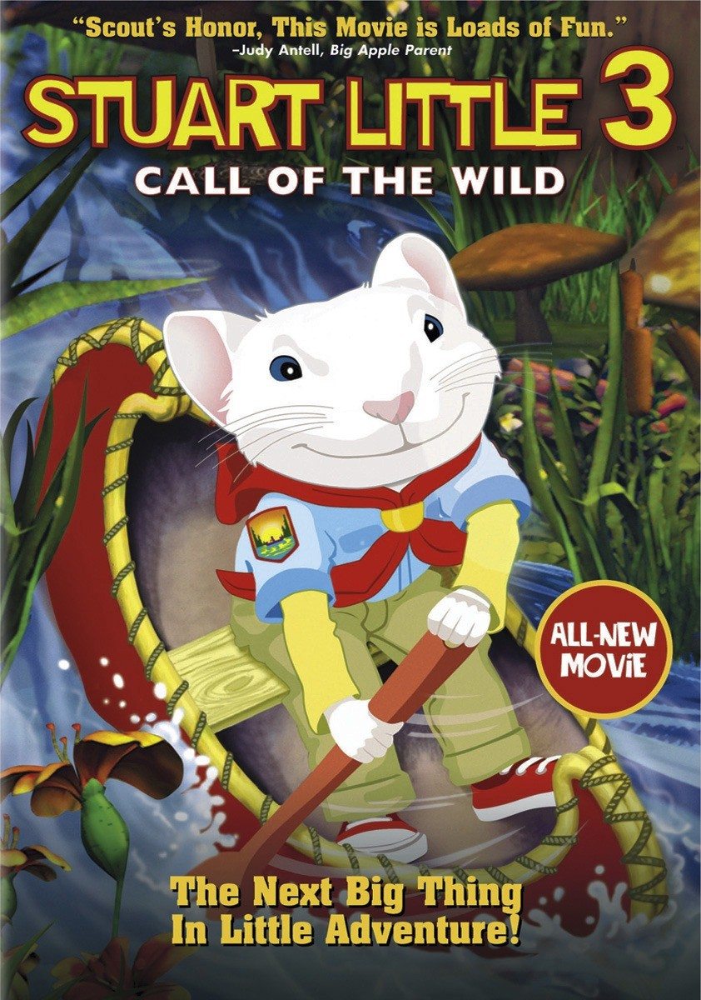

Ruby Classes: When, why and how to use them!

Classes are useful for giving objects created from that classes "innate abilities", I'll dicuss classes in this post!
08/03/2015
It is useful to think of classes as factories for producing objects. You can choose what feature you would like each object manufactured from your class to have. You can bestow innate methods to each object created from a class, by defining methods within the class first. Let's run through a real world scenario for clarity!
Imagine you owned a Pet store and you needed a way to keep track of all of your pets in your store which may have a lot of different values for their attribute such as weight, price, color etc. Then the creation of a class called Pet would help your endeavor tremendously.
The beauty of classes allows you to write methods within a class which can then be read or changed outside of the class. This speeds up the creation of multiple pet objects when you wish to deal with the creation of a lot of pets in quick succession with different attributes.
So again think of a class as a “factory” which produces objects with certain attributes. The first method defined in a class is typically the initialize method. You can set parameters for this method if you like, it means that when each object is “produce” from the “class factory” it must have some additional information assigned to it. In the case of pet’s you might say for every new pet created from the class Pets, it must have a “name” and a “gender”.
Thus we can quickly make 2 new pet’s with different names and genders thanks to the initialize method within out class. We can do that below:
If we want to update the information of objects which were created from the Pet class that is possible too. Imagine for the pet store owner that the movie Steward Little III has just been released and the demand for hamsters sky rockets!
Thanks to methods defined in classes which are known as “setter” methods, we can actually change the price of hamsters outside of the class. The method in question which allows us to read a pets value and edit it outside the class is called attr_acessor. Below is a useful table (although somewhat technical) recreated from the Ruby book "The Well Grounded Rubyist". The table shows how we can abbreviate methods which allow us to read or edit(write) a value for an object outside of the class.